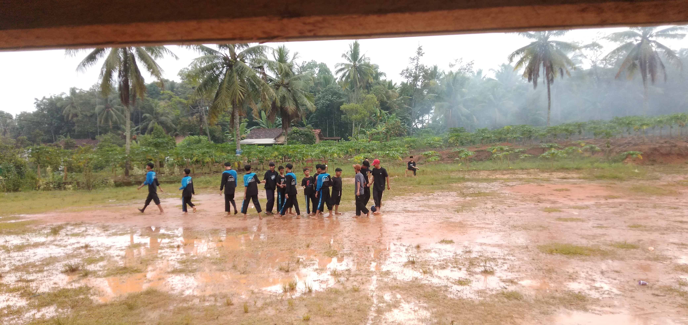
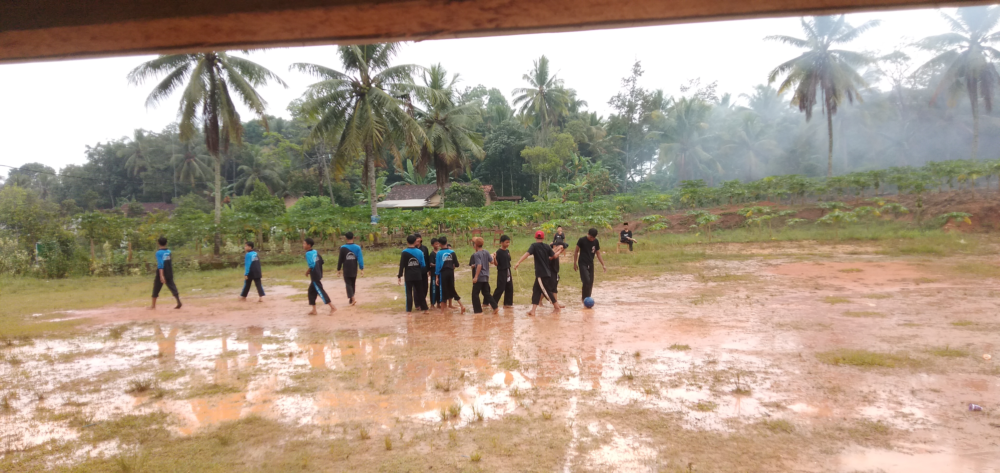
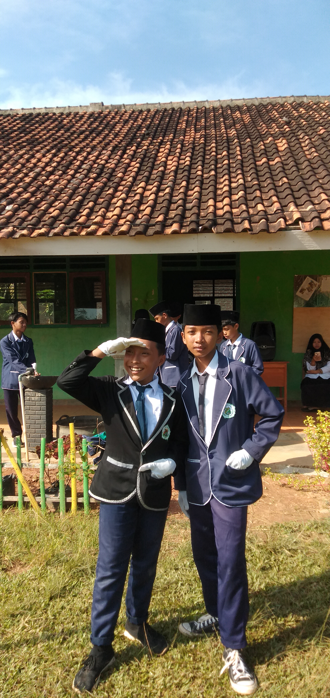
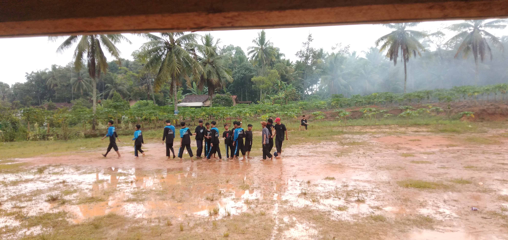
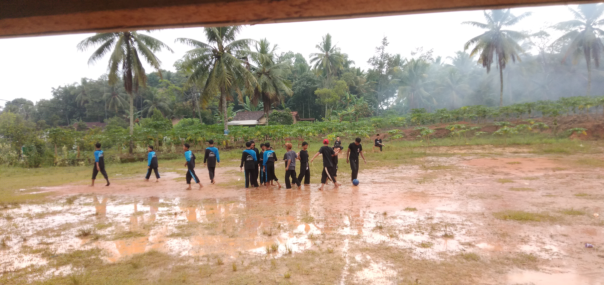
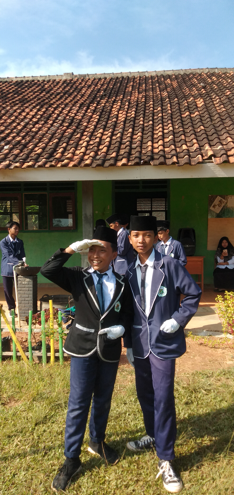

Pondok Pesantren Mamba'ul Hisan
Mamba'ul Hisan Panggungrejo didirikan di Desa Panggungrejo pada tahun 2013 oleh beliau ROMO KH. Imam Sukhrowardi, putra dari ALMAGHFURLAH ROMO KH. Shodiq Damanhuri. Atas dasar semangat dan cita-cita mengembangkan Islam (dakwah) yang tinggi, PPMH Panggungrejo berpusat di Sidayu Gresik dan pusat pendidikannya di PP.APIS (Asrama Pendidikan Islam Salafiyah) yang bertempat di Sanan Gondang, Gandusari, Blitar, Jawa Timur.
Dengan mengedepankan pendidikan berbasis nilai-nilai Islam, Mamba'ul Hisan membuka program madrasah diniyah, serta kegiatan ekstrakurikuler yang menunjang pengembangan potensi santri. Atas dasar semangat belajar para santri baik dari segi digital maupun formal, pondok ini terus berkembang dan berinovasi.
Pengasuh & Pengurus Ponpes Mamba'ul Hisan
- Ust. Habib Ashari
- Ust. M. Masykur
- Ust. Roihu Bardan
- Ust. Ahmadan Nuril Mubin
- Ust. Maksum Alvarizi
Ustadzah:
- Ustz. Qiqi Maisaroh
- Ustz. Atika Nur Kholifah
Memories Santri

 





Pendaftaran Santri Baru
Silakan kunjungi akun resmi kami di bawah ini: